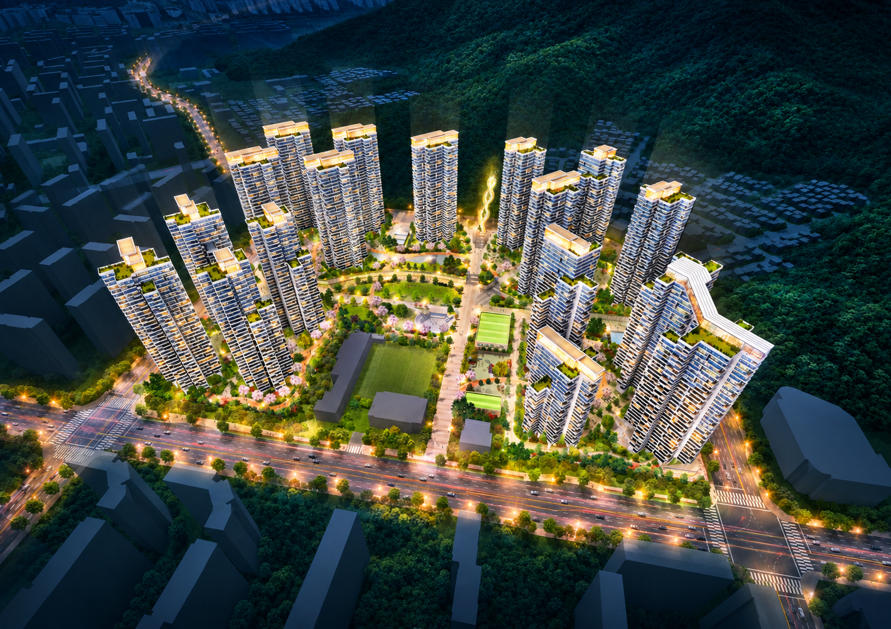

1차 주민설명회 개최
BUNDANG · JEONGDEUN VILLAGE · DISTRICT 41
하나된 동아우성,
더 가치 있는 내일
동아1·동아2·우성4·우성6단지가 함께 만드는 정든마을 통합재건축
주민의 단합과 투명한 소통으로 미래를 준비합니다.
PROJECT OVERVIEW
정든마을 동아우성 41구역
경기도 성남시 분당구 정자동 · 동아1·동아2·우성4·우성6 통합재건축
기존 아파트는 1,982세대이며, 상가를 포함한 토지등소유자는 2,050명입니다.
기존 아파트
1,982세대
동아1·2, 우성4·6 총 4개 단지토지등소유자
2,050명
상가 소유주 포함정비용적률
355%
주민제안 계획 기준최고 층수
35층
계획안 기준계획 신축 세대수
3,235세대
기존 1,982세대 대비 +1,253세대계획 비례율
113%
추정치 · 변동 가능※ 수치는 주민제안 계획 기준이며, 향후 행정절차·설계 변경·사업성 검토에 따라 조정될 수 있습니다. 비례율은 확정 수익이나 환급을 보장하지 않습니다.
MASTER PLAN
자연과 도시가 어우러지는
새로운 주거공간
정든마을 동아우성 통합재건축 조감도를 소개합니다.
세부 배치와 디자인은 향후 인허가 및 설계 과정에서 변경될 수 있습니다.

조감도 이미지 · 실제 설계는 향후 변경될 수 있습니다.
PROJECT MILESTONES
주요 추진경과
주민제안과 주민대표단 전환을 위한 주요 활동입니다.
2차 주민설명회 개최
주민제안서 본안 제출
2차 특별정비구역 선정 결과 발표 및 예비주민대표단·협력업체 미팅
주민대표단 전환 주민 동의 징구
대표 1명 · 감사 1명 · 단원 19명, 총 21명 구성
주민대표단 승인신청서 성남시 제출
※ 승인신청서 제출은 승인 완료를 의미하지 않습니다. 이후 행정 진행 상황은 소유주 카페에서 확인해 주세요.
RESIDENT REPRESENTATIVES
주민대표단 구성과 운영
4개 단지의 의견을 균형 있게 반영하고, 투명한 의사결정으로 통합재건축을 준비합니다.
동아우성 주민대표단 구성
총 21명
대표 1명 · 감사 1명 · 단원 19명
법정 구성 기준
25명 이내
대표·감사를 포함한 법정 정원 상한이며, 동아우성의 실제 구성 인원은 21명입니다.
승인 신청 현황
2026. 11. 11.
주민대표단 승인신청서를 성남시에 제출했습니다. 승인에는 한달정도 소요 예정입니다.
주민대표단의 주요 역할
사업 준비 및 주민 의견 수렴
특별정비계획안 검토, 사업방식 비교, 주민설명회 개최, 주민 동의서 접수와 관리 등을 수행합니다.
4개 단지의 의견을 고르게 수렴하고, 중요한 사안은 법령과 운영규정에 따라 결정합니다.
투명한 운영과 전문기관 협력
사업비와 계약조건을 검토하고, 회의록과 의결 결과를 기록·관리합니다.
정비사업전문관리업체, 설계업체, 법률·회계 전문가 등과 협력하되 법정 권한을 넘어 임의로 결정하지 않습니다.
※ 법정 주민대표단 구성 상한 25명은 실제 인원 25명을 뜻하지 않습니다. 주민대표단의 법적 권한과 승인 절차는 관계 법령 및 성남시의 심사 결과에 따릅니다.
2027 ROADMAP
2027년 특별정비구역 주민제안 추진 일정
2027년 특별정비구역 지정 제안 추진 일정입니다.
일정은 관계기관 공고 및 사업 추진 상황에 따라 변경될 수 있습니다.
2026.11.11
주민대표단 승인신청서 성남시 제출
2027.02.22~26
자문신청(초안)
2027.02~03
자문결과 통보
2027.04.15~16
평가 제안서 접수
2027.05.21
평가 결과 발표 (예정)
2027.06.01~07.30
본안 제안서 접수
2027.06~08
본안 수용 결정
2027.07~10
주민 공람 및 의회 의견 청취
2027.07~10
경기도 등, 관계기관 협의
2027.09~12
도시계획 심의
2027.09~12
본안 제안서 접수
2027.09~12
특별정비구역 지정 고시
※ 일정은 성남시 후속 공고와 심의·협의 결과에 따라 변경될 수 있습니다.
RECONSTRUCTION PROCESS
특별정비구역 지정 이후의 사업 절차
지정은 끝이 아니라 새로운 시작입니다.
사업방식과 적용 특례에 따라 실제 절차의 순서 및 병행 여부는 달라질 수 있습니다.
01 · 사업 주체 및 전문업체
조합 또는 신탁 등 사업방식을 검토하고, 필요한 전문업체와 설계·사업관리 체계를 준비합니다.
02 · 계획 및 인허가
건축·사업계획 수립, 시공사 선정, 사업시행계획 인가 등 관계 법령에 따른 절차를 추진합니다.
03 · 분양·공사·입주
분양신청 및 관리처분, 이주·철거, 착공·준공, 입주·등기와 청산 절차를 진행합니다.
PROJECT DELIVERY OPTIONS
조합방식과 신탁방식 비교
사업방식별 특성을 비교하고, 주민에게 유리한 조건을 함께 검토합니다.
선택할 때에는 총사업비와 금융비용, 계약 해지·변경 조건, 주민의 통제권, 전문업체 역량, 인허가 대응 능력을 함께 비교해야 합니다.
| 비교 항목 | 조합방식 | 신탁방식 |
|---|---|---|
| 사업 주체 | 조합이 사업의 주요 의사결정과 추진을 주도 | 신탁사가 계약과 법적 절차에 따라 사업시행 업무를 담당 |
| 주요 장점 | 주민 주도권 및 사업 운영에 대한 직접 통제 가능, 신탁보수 부담 없음 | 전문 조직의 사업관리·자금조달·실무 역량 활용 가능 |
| 주요 유의점 | 집행부 전문성·내부 의사결정·자금조달 역량 확보 필요 | 신탁보수 발생, 계약조건·권한 배분·주민 통제장치 면밀한 검토 필요 |
| 사업 속도 | 동의 확보, 조직 운영, 인허가 대응에 따라 달라짐 | 전문성 활용 가능하나 동의 확보, 인허가, 협의 과정에 따라 달라짐 |
| 핵심 성공 조건 | 주민 단합, 투명한 운영, 전문 협력체계 | 주민 단합, 합리적 계약, 투명한 감독체계 |
조합과 신탁 중 어느 방식이든 주민 동의와 단합, 전문적인 사업관리, 투명한 의사결정이 중요합니다.
사업방식만으로 속도가 결정되는 것은 아닙니다.
사업방식만으로 속도가 결정되는 것은 아닙니다.
※ 실제 사업기간·비용은 적용 법령, 정비구역 지정, 조합·신탁 인가 절차, 계약조건 및 사업 여건에 따라 달라질 수 있습니다. 방식별 우열이나 동일한 사업기간을 보장하는 설명은 아닙니다.
OFFICIAL OWNER COMMUNITY
모든 최신 안내는
소유주 카페에서 확인하세요
홈페이지에는 별도의 공지사항 게시판을 운영하지 않습니다. 추진경과, 주민 안내, 자료 및 중요한 공지는 정든마을 동아우성 소유주 카페를 통해 안내합니다.
정든마을 동아우성 소유주 카페 ↗더 자세한 정보는 소유주 카페로 오셔서 확인해 주세요.
소유주 인증 QR
휴대폰 카메라로 QR코드를 스캔하여
소유주 인증 절차를 확인하세요.